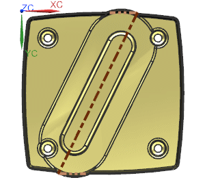
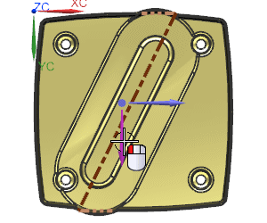
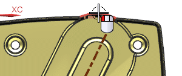
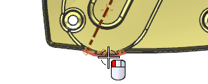

Use the Projected Distance between objects measurement
-
On the Utility toolbar, click Show
 , select all three lines and click OK.
, select all three lines and click OK.
-
Orient the view to Bottom, and in the View toolbar, click Perspective to turn it off.

-
On the Utility toolbar, click Measure Distance
 .
.
-
From the Type list, select Projected Distance between Object Sets.
-
In the graphics window, on the OrientXpress tool, select the Y Axis.

-
From the Type Filter list, select Edge.
-
For the Start Objects, select the top circular edge.

-
For the End Objects, select the lower circular edge.
